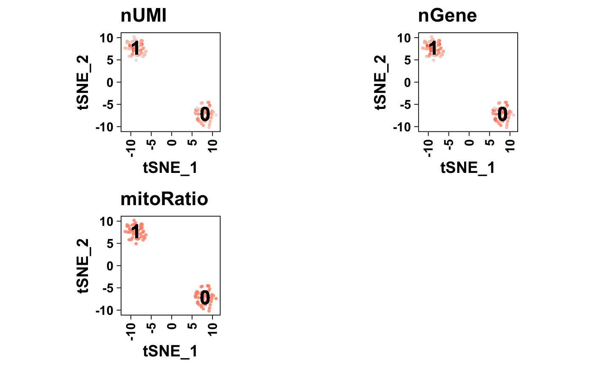

Plot feature
plotFeature(object, ...) # S4 method for SingleCellExperiment plotFeature( object, features, reduction = "UMAP", color = getOption("acid.continuous.color", default = ggplot2::scale_color_gradient(low = "gray75", high = "purple")), pointSize = getOption("acid.pointSize", default = 0.75), pointAlpha = getOption("acid.pointAlpha", default = 0.85), pointsAsNumbers = getOption("acid.pointsAsNumbers", default = FALSE), label = getOption("acid.label", default = TRUE), labelSize = getOption("acid.labelSize", default = 6L), dark = getOption("acid.dark", default = FALSE), legend = getOption("acid.legend", default = TRUE), expression = c("mean", "sum") ) # S4 method for Seurat plotFeature( object, features, reduction = "UMAP", color = getOption("acid.continuous.color", default = ggplot2::scale_color_gradient(low = "gray75", high = "purple")), pointSize = getOption("acid.pointSize", default = 0.75), pointAlpha = getOption("acid.pointAlpha", default = 0.85), pointsAsNumbers = getOption("acid.pointsAsNumbers", default = FALSE), label = getOption("acid.label", default = TRUE), labelSize = getOption("acid.labelSize", default = 6L), dark = getOption("acid.dark", default = FALSE), legend = getOption("acid.legend", default = TRUE), expression = c("mean", "sum") )
| object | Object. |
|---|---|
| features |
|
| reduction |
|
| color |
To set the discrete color palette globally, use: options(acid.color.discrete = ggplot2::scale_color_viridis_d()) |
| pointSize |
|
| pointAlpha |
|
| pointsAsNumbers |
|
| label |
|
| labelSize |
|
| dark |
|
| legend |
|
| expression |
|
| ... | Additional arguments. |
ggplot (1 feature) or list (multiple features).
Updated 2020-02-21.
data(Seurat, package = "acidtest") ## Seurat ==== object <- Seurat plotFeature( object = object, features = c("nCount_RNA", "nFeature_RNA", "PC_1", "PC_2"), reduction = "UMAP" )